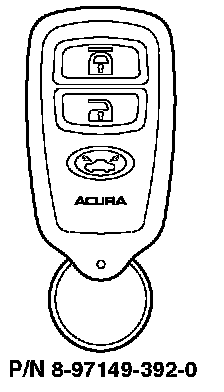

1998-99 SLX
1998-99 SLX with factory-installed security system
Programming a Transmitter
To program the transmitters, use one of these two procedures:
^ Procedure One cancels all learned transmitter codes and adds one new transmitter. None of the previously programmed transmitters will work. Use this programming procedure only if all transmitters were lost or stolen, or if a new control unit has been installed.
^ Procedure Two adds additional transmitters without cancelling any of the previously learned codes. The system accepts up to four transmitters.
Procedure One (cancels all codes, adds one new transmitter)
1. Open the driver's door.
2. Turn the ignition switch to the ACC position and then to the LOCK position three times. (This step must be completed within 10 seconds, or the system will not enter the programming mode.)
3. Within 10 seconds, close and open the door two times.
4. Turn the ignition switch to the ACC position and then to the LOCK position five times. Close and open the door. (Complete this process within 10 seconds.) Verify that the power door locks cycle once to confirm that the system is in programming mode.
5. Within 20 seconds, press the "LOCK" button on the transmitter you are programming. Verify that the door locks cycle once.
6. Within 20 seconds, press the "UNLOCK" button on the transmitter. Verify that the door locks cycle once to confirm that the system has accepted the transmitter's code.
Procedure Two (adds transmitters)
1. Open the driver's door.
2. Turn the ignition switch to the ACC position and then to the LOCK position three times. (This step must be completed within 10 seconds, or the system will not enter the programming mode.)
3. Within 10 seconds, close and open the door two times.
4. Turn the ignition switch to the ACC position and then to the LOCK position three times. Close and open the door. (Complete this process within 10 seconds.) Verify that the power door locks cycle once to confirm that the system is in programming mode.
5. Within 20 seconds, press the "LOCK" button on the transmitter you are programming. Verify that the door locks cycle once.
6. Within 20 seconds, press the "UNLOCK" button on the transmitter. Verify that the door locks cycle once to confirm that the system has accepted the transmitter's code.
Turning the Audible Chirp On/Off
1. Open the driver's door, then insert the key in the driver's door lock.
2. Turn the key to the "LOCK" position, then to the "UNLOCK" position. Repeat this two more times. (Complete this procedure within 10 seconds.)
3. Within 10 seconds, close and open the door two times.
4. Within 10 seconds, turn the key to the "LOCK" position, and then to the "UNLOCK" position, three times. Close and open the door once. Verify that the power door locks cycle once to confirm that the chirp has been turned on/oft.
Ordering a Transmitter
Transmitters can be ordered only by authorized Acura dealers. Order them from American Honda using normal parts ordering procedures.
Batteries for the Transmitter
The battery number is CR2016. Each transmitter uses two batteries.